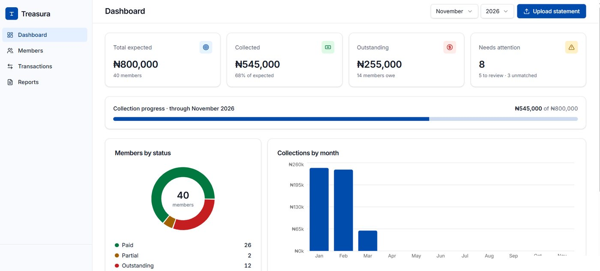
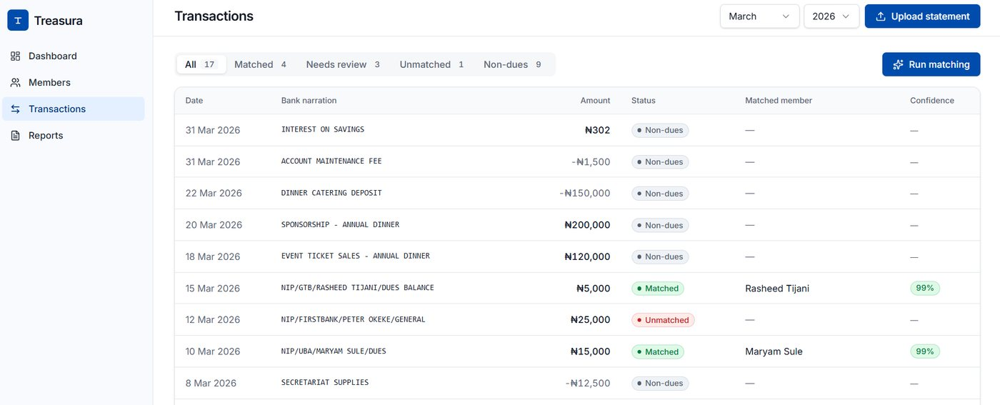
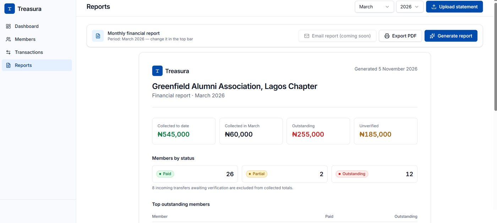

Bank statement · demo datasetGreenfield Alumni Association
NIP/GTB/RASHEED TIJANI/DUES BALANCE
₦5,000
Matched Rasheed Tijani · 99% confidence
NIP/UBA/MARYAM SULE/DUES
₦15,000
Matched Maryam Sule · 99% confidence
NIP/FIRSTBANK/PETER OKEKE/GENERAL
₦25,000
Unmatched No member found, sent to the officer
INTEREST ON SAVINGS
₦302
Non-dues Kept out of member balances
The problem
Association financial secretaries reconcile member payments by hand across bank statements, spreadsheets and WhatsApp, every month.
What I built
Upload a member list and a bank statement. Treasura matches payments to members and dues, flags what it cannot verify, and produces a treasurer report.
What happened
On a labelled demo set of 45 credits, 30 matched automatically, 5 went to review, 3 stayed unmatched and 7 were set aside as non-dues.
ProblemWho hurts and how much
Association finances run on disconnected tools
Payments arrive as bank transfers. Proof arrives on WhatsApp. Records live in Excel. The financial secretary is a volunteer who stitches it together before every report to members.
3 of 3officers I interviewed use manual or fragmented processes
13.3 hrsaverage per month on reconciliation and reporting (range 10 to 15)
100+members in one officer's dues follow-ups
“Considering the number of people in the association, it takes quite a lot of time to complete reconciliations accurately, and have reports that won’t be full of errors.”Association financial officer, user interview
Evidence is three exploratory interviews across alumni, professional and social associations. It was enough to define the problem and the demo. It is not a market study. Officers value this time at roughly ₦160,000 a year; that is their perceived value of the time, not money lost.
ScopeWhat I built and what I cut
Four features, one seven-step flow
Persona: Ada, a volunteer financial secretary who tracks contributions, chases dues and reports to members. She is illustrative, built from the interviews.
Sign up and set dues
Upload members
Upload statement
Run matching
Review exceptions
View balances
Export report
In the MVP
Import and setup: Excel or CSV, column mapping, a dues plan
Matching and review: every match shows its confidence and reason
Member ledger: expected against paid, including instalments
Monthly report: collected, outstanding and unverified totals, PDF export
Cut on purpose
Membership directory, events, communications: that is the membership platform I am not replacing
Expense tracking, fundraising, full accounting: that drifts into accounting software
Reminder drafts: stretch goal, not in the MVP
The rule I used: if a feature does not solve the stated problem, it is out.
Where it sits in the market
Layer
Covered today by
Treasura's role
Membership management
Njofa, Raklet, Wild Apricot, MemberClicks
Imports from them, does not replace them
Payment collection
Monnify, Carbon, OnePipe
Works with any bank account, does not collect money
Financial reconciliation
Klak, Recital, Credrails (built for businesses)
Core: matches payments to members and dues
Reporting and accountability
Excel, bank statements, WhatsApp
Core: member balances and treasurer reports
Why not a virtual account per member? It fixes matching at the source, but members must change how they pay and it cannot process past statements. Treasura needs no change in behaviour. Virtual accounts stay on the roadmap. Competitor details come from public web pages in November 2026 and are not independently verified.
DecisionsOptions, reasons, trade-offs
Six decisions that shaped the product
Backend
Supabase with Lovable, or a custom Python or Node backend
Chose
Supabase with a Lovable frontend. The brief rewards a working demo, and Supabase gives auth, database and serverless functions in one place.
Trade-off
Vendor lock-in, and TypeScript has fewer data libraries than Python. I kept matching as a separate module so it can move to a Python worker if volume outgrows edge functions.
Database
Postgres, or Firebase
Chose
Postgres. Balances are sums and joins across members, dues and payments, which suits SQL. Row-level security keeps each association's data separate.
Trade-off
More up-front schema work than a document store.
Where AI sits
AI for everything, or AI as a last resort
Chose
Rules first, then fuzzy name matching, then AI only for rows those cannot settle. AI confidence is capped below the auto-match threshold, so an AI suggestion always goes to a person.
Trade-off
More rules to maintain, in exchange for results an officer can explain to their members.
Money math
Let the model calculate, or compute in code
Chose
Amounts are stored in kobo as whole numbers. Every balance and total comes from SQL views. AI never produces a figure.
Why it matters
An AI that is wrong about a name costs a review click. An AI that is wrong about a balance costs trust.
Splits and duplicates
Auto-handle, or hand to the officer
Chose
Payments covering several members are always reviewed by a person, and a database trigger rejects splits above the transaction amount. Re-uploading a statement is skipped by hash; a genuine repeat inside one file is kept and flagged.
AI provider
Gemini free tier, or a paid API
Chose
Gemini's free tier, called from one function so the provider can be swapped.
Trade-off
Free-tier requests may be used by Google to improve its products, so only demo data was sent. Availability is not guaranteed: Google returned a 503 overload error during testing.
BuildArchitecture and data
System architecture
Financial officerWeb browser
FrontendReact app, built with Lovable
Gemini APIAmbiguous rows only
HTTPS with a session token (JWT)
Supabase
AuthEmail login, session token
Edge functionrun-matching: rules, fuzzy match, AI fallback
Postgres11 tables, 3 views, row-level security
Roadmap, not builtEmail delivery of reports, bank feeds
The officer logs in through Supabase Auth and receives a session token.
The React app reads and writes data and calls run-matching, sending that token.
The function reads and writes Postgres as the logged-in user, so row-level security keeps every association's data apart.
Only ambiguous bank narrations go to Gemini, with a shortlist of candidate names. Gemini can only choose from that shortlist.
Gemini receives narration text and candidate names, never member ids, phone numbers or account numbers. Secrets stay in Supabase.
Every business table carries an association_id. Composite foreign keys mean a payment can never point at another association's member, even if the app has a bug. The matches table allows several rows per transaction, which is how split payments work.
API surface
Interface
What it does
Supabase Auth
Email login, returns a session token
Supabase REST and RPC
Reads and writes tables and views; creates the association and its dues
Edge function run-matching
Takes an association id and a dry-run flag; returns summary counts
Gemini API
Reads ambiguous narrations, returns structured JSON that the function validates
Exact names, aliases, reference text. Settles the clear cases.
Fuzzy match
Jaro-Winkler similarity. Auto-match at 0.90 or above; review from 0.60 to 0.89.
AI, last
Only unresolved rows. Confidence capped at 0.85, so a person always confirms.
Edge cases in the dataset: an abbreviated name (“A. TUNDE”), two similar names, a ₦40,000 payment covering two members, an exact duplicate, and a donation. The split and the duplicate go to the officer; the donation is kept out of dues.
The live API response (dry run, nothing saved)
// POST /functions/v1/run-matching
{ "association_id": "…", "dry_run": true }
// 200 OK in 3.2 s
{ "summary": {
"processed": 45, "matched": 30, "needs_review": 5,
"unmatched": 3, "non_dues": 7, "auto_allocations": 30,
"ai": { "status": "http_503", "model": "gemini-3.5-flash-lite" } } }
The http_503 is Google's overload error. The function kept the rule-based results and reported the AI status instead of failing.

Dashboard: collected, outstanding and items that need attention.

Transactions: status tabs, matched member and confidence on every row.

Report: totals, an unverified figure kept apart, and PDF export.
Testing
Done
Matching run against a labelled answer key
Mocked AI failures (rate limit, server error, bad JSON) fall back safely
AI answers outside the shortlist, or above the payment amount, are ignored
A second user saw none of the first user's data
The database rejected a split above the transaction amount
Planned, not done
Automated unit tests in a pipeline
End-to-end test of the full flow
Load test with a 5,000-row statement
Usability test with three financial officers
LessonsWhat I would tell the next team
What went wrong, and what I took from it
The 70% statistic
My first research pass turned up a headline figure about Nigerian cooperatives. It came from a study of university staff cooperatives in one state. I kept it, with that caveat, instead of presenting it as a national number.
The Gemini 503
During a live test, Google's model was overloaded. Because AI was the last tier and not the engine, the product still returned results. I now design AI calls as optional dependencies.
Known limits
Interview evidence comes from three officers, so findings are exploratory.
Accuracy was measured on a small designed dataset, not real statements.
Balances are all-time per member. Filtering by period is next.
The report summary is template-based today. An AI-written summary is on the roadmap.
Compliance with Nigeria's data protection law has not been reviewed.
How I used AI to build it
Stage
Tools
What I asked, and what I decided
Idea and research
ChatGPT, Claude
Competitor scan and statistics. I checked the sources and kept the caveats.
Features and PRD
Claude
Asked for a long list, then cut it to four MVP features.
Technical decisions
Claude
Asked for two architecture options with trade-offs. I chose Supabase.
Interface and code
Lovable, Claude
Answered design questions, then used the Lovable prompt that built the interface. Deployed and tested the SQL and function myself in Supabase and Postman.
Inside the product
Gemini
Reads ambiguous bank narrations and suggests a member. A person confirms.
What comes next
Next
Usability test with three financial officers, timed against the 13.3 hours they reported